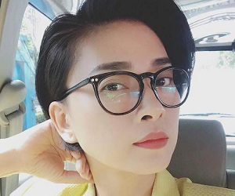

Neon Nightmares

Syd
- Name: Syd Kowalcik
- Deedname/Shadowname: & ((pronounced: "Ampersand"))
- Apparent Age: Mid 30s
- Breed: Mage
- Tribe/Tradition: Null Seekers
- Auspice/Faction: Torchbearers
- Visible Merits/Flaws: Foul Mouthed
- General Disposition and/or Description: “Mages” really boil down to one of three things: Techno-fascists who want everyone to tow the line, stodgy old grumps who want to return to some idealized versions of the “good old days,” and the young folks too stupid to question the “old ways.” Fuck that! The Torchbearers are the new way forward and the only true hope for humanity. Too bad even most of your ‘Bearers are equally terrible...
Ruby
CURRENTLY M.I.A.
- Name: Roshani Nokresa
- Deedname/Shadowname: Ruby
- Apparent Age: Lower 30s
- Breed: Mage
- Tribe/Tradition: Society of Ether
- Auspice/Faction: Torchbearers
- Visible Merits/Flaws: N/A
- General Disposition and/or Description: She truly believes in the wonders of science and the goals of progress. Unfortunately, the world often rejects both, as shown by luddite tendencies (including the Technocratic Science) and “conservative” movements (just look at what happened to Iran since your parents left that place…). She is determined to find the bright future humanity was promised.
Billie
- Name: Billie Eskilden
- Deedname/Shadowname: "Binary"
- Apparent Age: Lower 40s
- Breed: Mage
- Tribe/Tradition: Navalon - Court of Machines
- Auspice/Faction: Torchbearers
- Visible Merits/Flaws: Cybernetic Eye, Robotic Right Arm
- General Disposition and/or Description: Humanity is weak of body, but strong of mind. Biology is flawed, but it can be improved. Through the tools, modifications, and improvements upon the foundation of nature Humanity can ascend together to a new world and reach the singularity. The Union lost its way, but you will bring their lost mission to the masses...
Samir
- Name: unknown
- Deedname/Shadowname: Samir Rashid
- Apparent Age: Upper 50s
- Breed: Mage
- Tribe/Tradition: Null Seekers (Batini)
- Auspice/Faction: Torchbearers (Nominally)
- Visible Merits/Flaws: Aged
- General Disposition and/or Description: He has seen the darkest parts of humanity in general and the Awakened in particular. He saw the Web of Faith built up and then destroyed. He saw the Batini betrayed, abandoned, forgotten, and erased. He saw the Traditions become a mockery of itself. He saw even the Union corrupted from within. The Torchbearers are the best of us for now, but they’ll fail too. It’s only a matter of time...
Luna

- Name: "Luna" Nguyet Tran
- Deedname/Shadowname: Moonseeker
- Apparent Age: Mid 20s
- Breed: Mage
- Tribe/Tradition: Navalon - Court of the Void
- Auspice/Faction: Torchbearers
- Visible Merits/Flaws: N/A
- General Disposition and/or Description: A young woman of Vietnamese descent, Luna likely wouldn’t stand out in a crowd if not for her often unconventional wardrobe choices. Nearly always wearing glasses (which she does not need) and dressed in some variation of practical or working clothes, Luna is only exceptional compared to her family’s expectations of appearance. She’s very approachable, if seeming somewhat distracted and “moonstruck” when people first meet her. Those who get to know her would find her eccentric but pure-hearted, with a very honest desire to make the world a better place.
Sophia
- Name: unknown
- Deedname/Shadowname: Dr. Sophia
- Apparent Age: Lower 30s
- Breed: Mage
- Tribe/Tradition: Unknown Technocratic Paradigm
- Auspice/Faction: Torchbearers (nominally)
- Visible Merits/Flaws: [App: 5] [Enchanting Eyes] [Spark of Life]
- General Disposition and/or Description: Building a better world? Empowering women? Proving the corruption and the “old boys’ club” mentalities in society and challenging them? Sure, it all sounds good, but that was your “mother’s” cause, not yours. Instead, you want to find your own identity and find out what matters to you. You want to be strong, smart, and beautiful; that’s all you know for sure right now, but you’re working on finding a deeper purpose....